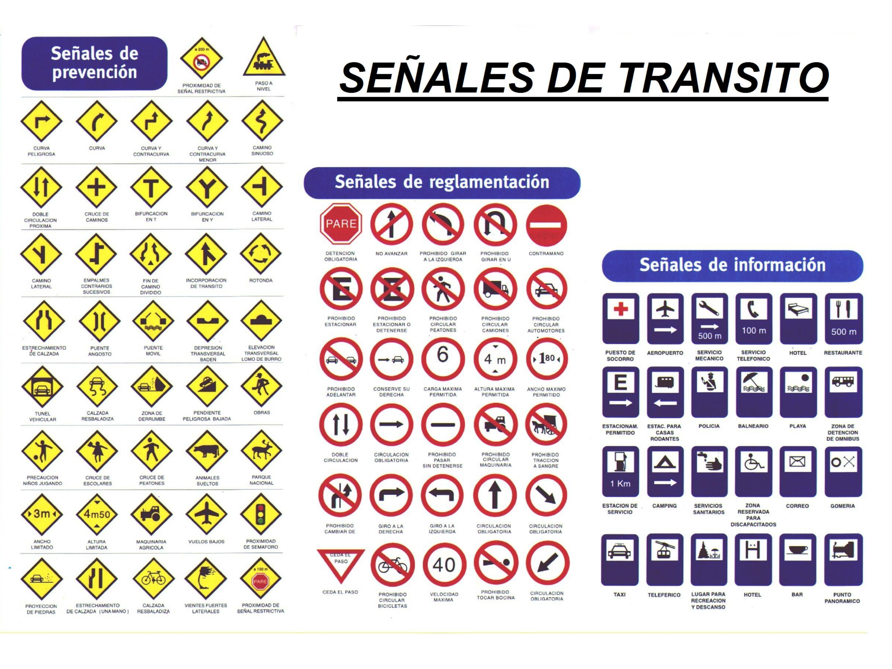

Nuestra empresa es una empresa netamente panameña, con numero de RUC. 1655288-1-676495 / DV 40, y administrada por medio del Licenciado OMAR ABDIEL LOPEZ CANDANEDO, personal No.8-712-1688, representante legal de la empresa AUTO ESCUELA EL TRANSPORTE EN MARCHA, S.A., con número de empleador 87-821-10125, con teléfono móvil 6578-8324 y oficinas principales ubicadas en la provincia de Panamá, distrito de Panamá, corregimiento de Juan Diaz, edificio centro comercial el cruce de Pedregal, oficina No. 11-B. somos una empresa comprometida con la formación de conductores responsables mediante la enseñanza teórica y práctica de la seguridad vial, garantizando el respeto al reglamento de tránsito de la Autoridad de Tránsito y Transporte Terrestre (ATTT) y contribuyendo a la reducción de accidentes en el país. Cabe señalar que nuestro método se basa en capacitación y mejoramiento de seguridad para que el iniciado cuente con las herramientas y sea responsable al momento de conducir en las vías de la Republica de Panama.
Bienvenido a nuestro centro de capacitación
Tipos de licencias disponibles
Estas son las letras con las que te podemos ayudar a optar por tu licencia:
- A, C-A, B
- A, C, D-A, B, C, D
- E1, E2, E3
- F - I
- H - G

×

LEGISLACION DEL TRANSITO
PDF • Haz clic para abrir el documento
↗
PLAN DE ESTUDIOS
PDF • Haz clic para abrir el documento
↗